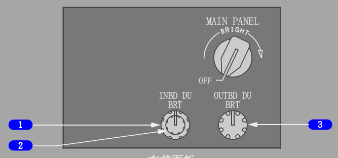

1 外侧显示组件亮度(OUTBD DU BRT)控制(旋转式)
转动 -
调节机长外侧显示组件的亮度。
2 内侧显示组件亮度(INBD DU BRT)控制(外圈)(旋转式)
转动 -
调节机长内侧显示组件的亮度。
3 内侧显示组件亮度/对比度(INBD DU BRT)控制(内圈)(旋转式)
转动 -
调节机长显示组件上的气象雷达和地形显示亮度，当MFD在视频监视方式时，调节显示对比度。(选型)
4 上部显示组件亮度(UPPER DU BRT)控制(旋转式)
转动 -
调节上部显示组件的亮度。
5 下部显示组件亮度(LOWER DU BRT)控制(外圈)(旋转式)
转动 -
调节下部显示组件的亮度。
6 下部显示组件亮度/对比度(LOWER DU BRT)控制(内圈)(旋转式)
转动 -
调节下部显示组件上的气象雷达和地形显示亮度，当MFD在视频监视方式时，调节显示对比度。(选型)

1 内侧显示组件亮度(INBD DU BRT)控制(外圈)(旋转式)
转动 -
调节机长内侧显示组件的亮度。
2 内侧显示组件亮度/对比度(INBD DU BRT)控制(内圈)(旋转式)
转动 -
调节机长显示组件上的气象雷达和地形显示亮度，当MFD在视频监视方式时，调节显示对比度。(选型)
3 外侧显示组件亮度(OUTBD DU BRT)控制(旋转式)
转动 -
调节机长外侧显示组件的亮度。